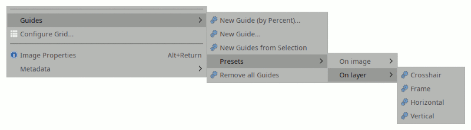

This plugin creates a Image>Guides>Presets submenu with sets of guides that you use often.
If necessary these presets can beinvoked using hotkeys (see Edit>Keyboard shortcuts).
Guides can be created relative to the image or relative to the current active layer.

The plugin works using a small configuration file. This file:
.py replaced by extension .iniUpdating the file can be tricky, see the important "Registration" section below.
The file contains a set of lines, that are either comments, empty, or a preset. Comment lines start with a '#'.
A preset line must contain, separated by colons (:):
:)I) or layer (L) (I assumed if omitted)Positions are either:
[-1., +1.]. They indicate a relative position in the canvas.A floating point number always contains a dot: .3 or 0.3. An integer number has no dot: 33.
Positive numbers are relative to the left/top sides, negative numbers to the right/bottom ones
Positions that fall outside the canvas are silently ignored
A position list is a set of numbers separated by commas. Spaces can be added for clarity, and the list can be enclosed in square brackets ([,])
For the snake charmers (they will recognize themselves), a position list is any expression that yields an iterable (the position list specification is passed to eval()). You can test your expressions in the snake training area.
Examples
A comment line:
\# This is a comment line:
A preset with both lists, each containing a single floating point position:
Centered:centered:[.5]:[.5]:I
The same preset, centered on the active layer:
Centered:centered:[.5]:[.5]:L
A preset with negative numbers:
Margins @20px:margins20:20,-20:20,-20:I
A preset mixing floating point and integer positions:
Full Monty:fullmonty:[20,50,.5,-50,-20]:[20,50,.5,-50,-20]:I
A preset with no vertical guides (note the empty column ::):
No vguides:novert:[33]::I
A preset with no horizontal guides (note the empty column ::):
No hguides:nohorz::42:I
A preset with Python expressions:
Python expression:python:range(50,251,5):[((x+1)/10.)**2 for x in range(10)]
Guides created from layers are created relative to the current active layer. Like all Gimp guides, they are relative to the image, so they will not move with the layer.
Gimp updates the registration data for the plugins only when it notices a new plugin executable, or when an already registered executable changes (according to the file modification date). Changing the .ini file contents would requires Gimp to update its registration data, but since the plugin file hasn't changed it won't notice it.
You can force Gimp to re-acquire the registration data using any of the methods below:
pluginrc file in the Gimp profile, locating the line starting with (plug-in-def that bears the plugin file name, and delete the file contents from that line up to and not including the next (plug-in-def.pluginrc file, but this makes Gimp re-run all the plugins for registration the next time it starts.touch utility (if you have it...) to bump the date of the plugin file The plugins outputs some debugging information when the registration code is run. For instance:
Reading configuration file /home/me/.gimp-2.8/plug-ins/ofn-preset-guides.ini Preset "Centered": registering Preset "Margins @20px": registering Preset "Margins @50px": registering Preset "Full Monty": registering Preset "No vguides": registering Preset "No hguides": registering Preset "Python expression": registering Preset "Neg floats": registering Line 33 does not contain at least 4 elements Preset "Bad list": Incorrect syntax: 20a,35+ Preset "Bad element": invalid number: '23' Configuration file /home/me/.gimp-2.8/plug-ins/ofn-preset-guides.ini read successfully
To obtain this information:
${plugin_name}.log) in the same directory as the plugin and configuration files. If there are no messages in the terminal, or if the log file is not created or updated, see the "Registration" section above.